<!DOCTYPE html>
<html lang="en">
<head>
  <meta charset="utf-8">
  <meta name="viewport" content="width=device-width, initial-scale=1.0">
  <title>Chapter 8: Tangents - SCERT Class 10 Mathematics</title>
  <style>

:root {
  --bg-color: #fcfcfd;
  --card-bg: #ffffff;
  --text-color: #1e293b;
  --text-muted: #64748b;
  --primary-color: #0284c7;
  --primary-light: #e0f2fe;
  --border-color: #e2e8f0;
  --radius: 10px;
  --shadow: 0 4px 6px -1px rgb(0 0 0 / 0.05), 0 2px 4px -2px rgb(0 0 0 / 0.05);
}

body {
  font-family: -apple-system, BlinkMacSystemFont, "Segoe UI", Roboto, "Noto Sans Malayalam", "Manjari", "Gayathri", sans-serif;
  background-color: var(--bg-color);
  color: var(--text-color);
  line-height: 1.8;
  font-size: 1.1rem;
  margin: 0;
  padding: 0;
}

.container {
  max-width: 860px;
  margin: 0 auto;
  padding: 2.5rem 1.5rem 5rem 1.5rem;
}

header {
  margin-bottom: 2.5rem;
  padding-bottom: 1.5rem;
  border-bottom: 2px solid var(--border-color);
}

.badge-row {
  display: flex;
  gap: 0.5rem;
  margin-bottom: 0.75rem;
}

.badge {
  display: inline-block;
  font-size: 0.75rem;
  font-weight: 700;
  text-transform: uppercase;
  letter-spacing: 0.05em;
  padding: 0.25rem 0.65rem;
  border-radius: 9999px;
  background: var(--primary-light);
  color: var(--primary-color);
}

.badge-medium {
  background: #fef3c7;
  color: #b45309;
}

h1 {
  font-size: 2.1rem;
  font-weight: 800;
  margin: 0.5rem 0 1rem 0;
  line-height: 1.3;
  color: #0f172a;
}

.nav-bar {
  display: flex;
  justify-content: space-between;
  margin: 1.5rem 0;
  font-size: 0.95rem;
}

.nav-bar a {
  color: var(--primary-color);
  text-decoration: none;
  font-weight: 600;
  padding: 0.5rem 1rem;
  border-radius: var(--radius);
  background: var(--card-bg);
  border: 1px solid var(--border-color);
  transition: all 0.2s ease;
}

.nav-bar a:hover {
  background: var(--primary-light);
  border-color: var(--primary-color);
}

.nav-bar .disabled {
  color: var(--text-muted);
  pointer-events: none;
  border-color: transparent;
  background: transparent;
}

.page-section {
  background: var(--card-bg);
  border: 1px solid var(--border-color);
  border-radius: var(--radius);
  box-shadow: var(--shadow);
  padding: 2rem;
  margin-bottom: 2.5rem;
}

.page-header {
  display: flex;
  align-items: center;
  justify-content: space-between;
  margin-bottom: 1.25rem;
  padding-bottom: 0.5rem;
  border-bottom: 1px dashed var(--border-color);
}

.page-number {
  font-size: 0.8rem;
  font-weight: 700;
  text-transform: uppercase;
  color: var(--text-muted);
  letter-spacing: 0.05em;
}

.page-content p {
  margin: 0 0 1.25rem 0;
  white-space: pre-wrap;
  word-break: break-word;
}

.page-content p:last-child {
  margin-bottom: 0;
}

.diagram-card {
  margin: 2rem 0;
  text-align: center;
  background: #f8fafc;
  border: 1px solid var(--border-color);
  border-radius: var(--radius);
  padding: 1rem;
  overflow: hidden;
}

.diagram-card img {
  max-width: 100%;
  height: auto;
  border-radius: calc(var(--radius) - 4px);
  display: inline-block;
  box-shadow: 0 2px 4px rgba(0,0,0,0.04);
}

.diagram-card figcaption {
  font-size: 0.85rem;
  color: var(--text-muted);
  margin-top: 0.75rem;
  font-weight: 500;
}

footer {
  margin-top: 3rem;
  padding-top: 2rem;
  border-top: 2px solid var(--border-color);
}

  </style>
</head>
<body>
  <div class="container">
    <header>
      <div class="badge-row">
        <span class="badge badge-medium">English Medium</span>
        <span class="badge">SCERT Class 10 Mathematics</span>
        <span class="badge">Part 2</span>
      </div>
      <h1>Chapter 8: Tangents</h1>
      <div class="nav-bar"><a href="chapter_07_coordinates.html">← Chapter 7: Coordinates</a><a href="index.html">☰ Index</a><a href="chapter_09_solids.html">Chapter 9: Solids →</a></div>
    </header>

    <main>
      <section class="page-section" id="page-7">
  <div class="page-header"><span class="page-number">Page 7</span></div>
  <figure class="diagram-card" id="fig_ch08_p007_01"><figcaption>Figure fig_ch08_p007_01 (Page 7)</figcaption></figure>
  <figure class="diagram-card" id="fig_ch08_p007_02"><figcaption>Figure fig_ch08_p007_02 (Page 7)</figcaption></figure>
  <figure class="diagram-card" id="fig_ch08_p007_03">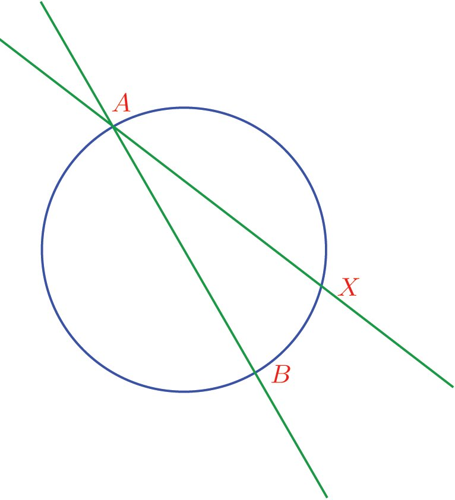<figcaption>Figure fig_ch08_p007_03 (Page 7)</figcaption></figure>
  <div class="page-content">
    <p>Line and circle
See this picture :</p>
    <p>AB is the diameter through the point A on the circle; and it is extended a bit on
either side.
This picture shows another chord through A, instead of a diameter, which is
also extended.</p>
  </div>
</section><section class="page-section" id="page-8">
  <div class="page-header"><span class="page-number">Page 8</span></div>
  <figure class="diagram-card" id="fig_ch08_p008_01"><figcaption>Figure fig_ch08_p008_01 (Page 8)</figcaption></figure>
  <figure class="diagram-card" id="fig_ch08_p008_02">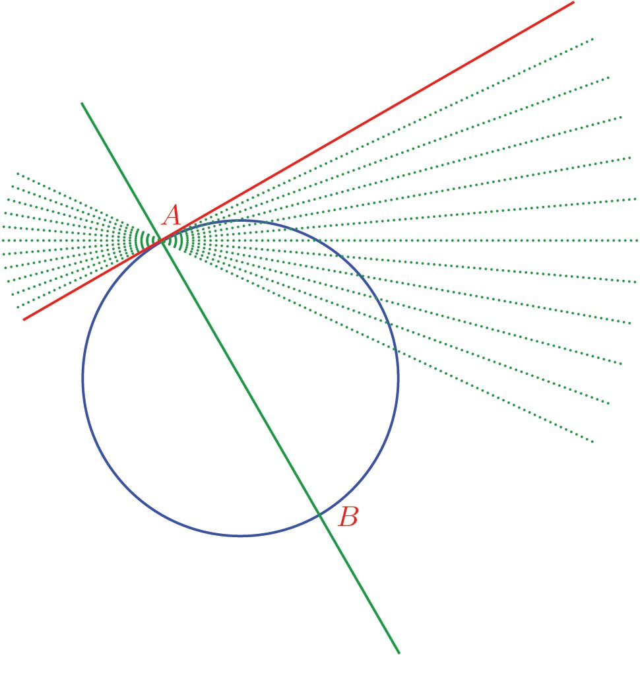<figcaption>Figure fig_ch08_p008_02 (Page 8)</figcaption></figure>
  <figure class="diagram-card" id="fig_ch08_p008_03">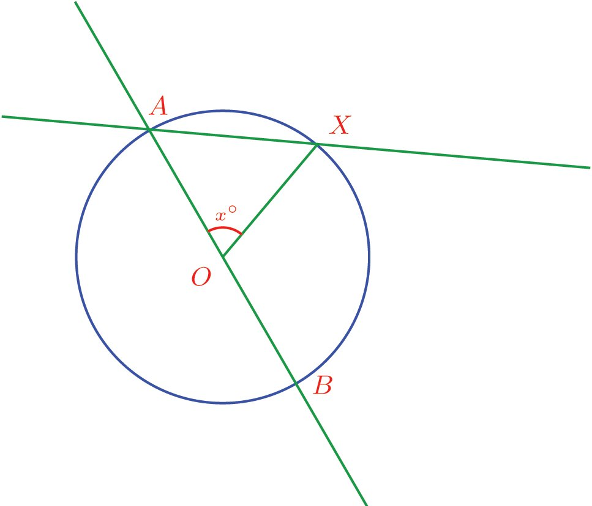<figcaption>Figure fig_ch08_p008_03 (Page 8)</figcaption></figure>
  <figure class="diagram-card" id="fig_ch08_p008_04"><figcaption>Figure fig_ch08_p008_04 (Page 8)</figcaption></figure>
  <figure class="diagram-card" id="fig_ch08_p008_05"><figcaption>Figure fig_ch08_p008_05 (Page 8)</figcaption></figure>
  <figure class="diagram-card" id="fig_ch08_p008_06"><figcaption>Figure fig_ch08_p008_06 (Page 8)</figcaption></figure>
  <div class="page-content">
    <p>Mathematics</p>
    <p>X
Without altering the position of A, suppose we make X closer to A.</p>
    <p>What if we make X closer and closer to A along the circle?
Draw a circle centred at a point O
in GeoGebra and mark points A, X
on it. Draw lines joining O, A and A,</p>
    <p>X. What happens to the line AX
when X is moved closer to A? When
X coincides with A? Join OX. What
happens to the angles OAX and
AOX as X is moved closer and
closer to A?</p>
    <p>The red line in the picture just touches the circle at A, right?
This line is called the tangent
to the circle at A. Look at the
picture again; see any relation
between the tangent and the
diameter?
To make this clear, let’s take
the central angle of chord AX
as xo.</p>
    <p>160</p>
  </div>
</section><section class="page-section" id="page-9">
  <div class="page-header"><span class="page-number">Page 9</span></div>
  <figure class="diagram-card" id="fig_ch08_p009_01"><figcaption>Figure fig_ch08_p009_01 (Page 9)</figcaption></figure>
  <figure class="diagram-card" id="fig_ch08_p009_02"><figcaption>Figure fig_ch08_p009_02 (Page 9)</figcaption></figure>
  <figure class="diagram-card" id="fig_ch08_p009_03">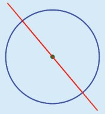<figcaption>Figure fig_ch08_p009_03 (Page 9)</figcaption></figure>
  <figure class="diagram-card" id="fig_ch08_p009_04"><figcaption>Figure fig_ch08_p009_04 (Page 9)</figcaption></figure>
  <figure class="diagram-card" id="fig_ch08_p009_05">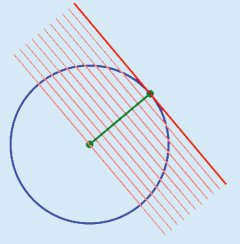<figcaption>Figure fig_ch08_p009_05 (Page 9)</figcaption></figure>
  <figure class="diagram-card" id="fig_ch08_p009_06">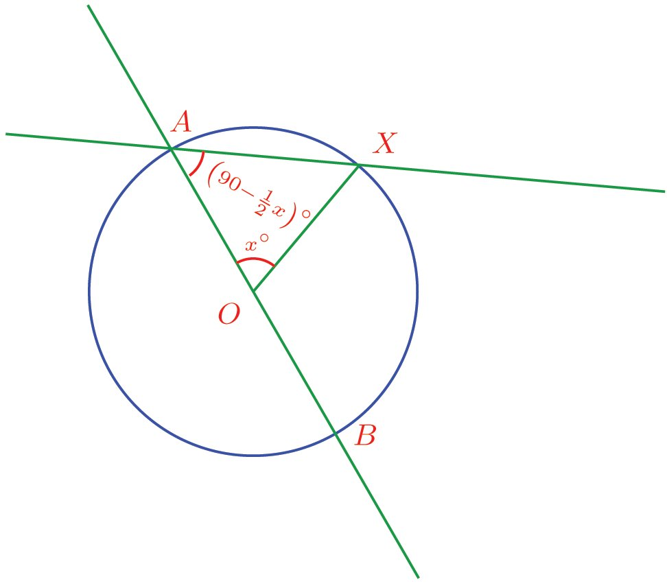<figcaption>Figure fig_ch08_p009_06 (Page 9)</figcaption></figure>
  <figure class="diagram-card" id="fig_ch08_p009_07"><figcaption>Figure fig_ch08_p009_07 (Page 9)</figcaption></figure>
  <div class="page-content">
    <p>Tangents</p>
    <p>As X gets closer to A, the length of the chord AX and its central angle become
smaller; that is, the number x gets closer to zero.</p>
    <p>What about the angle between the chord and the
diameter? Since ΔAOX is isosceles, this angle is
1
1 ⎞
⎛
(180 − x)o = ⎜⎝ 90 − 2 x⎟⎠
2</p>
    <p>o</p>
    <p>Sliding line
See this picture – a circle
and a line through the
centre.
Suppose we slide the line
a little higher. And sliding
it more and more, we
finally get a line just
touching the circle at
a single point. And the
line joining the centre
and this point is
perpendicular to all
these parallel lines.</p>
    <p>As X gets closer to A, this angle gets closer to 90o.
And when the extended chord becomes a tangent,
the angle becomes exactly 90o.</p>
    <p>161</p>
    <p>Draw a circle and a radius in GeoGebra.
Choose a point on the radius (point on
object) and draw the perpendicular
through it. Now change the position of the
point. What happens when it is on the
circle?</p>
  </div>
</section><section class="page-section" id="page-10">
  <div class="page-header"><span class="page-number">Page 10</span></div>
  <figure class="diagram-card" id="fig_ch08_p010_01"><figcaption>Figure fig_ch08_p010_01 (Page 10)</figcaption></figure>
  <figure class="diagram-card" id="fig_ch08_p010_02">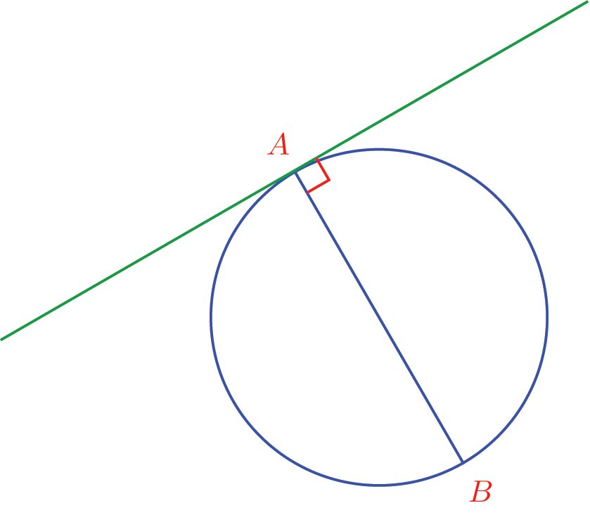<figcaption>Figure fig_ch08_p010_02 (Page 10)</figcaption></figure>
  <figure class="diagram-card" id="fig_ch08_p010_03">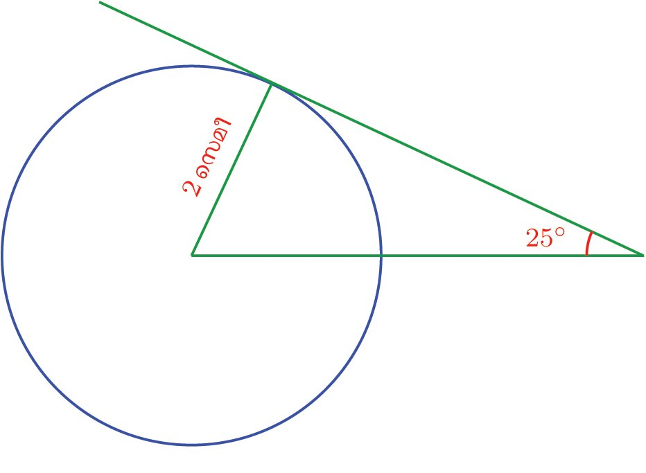<figcaption>Figure fig_ch08_p010_03 (Page 10)</figcaption></figure>
  <figure class="diagram-card" id="fig_ch08_p010_04">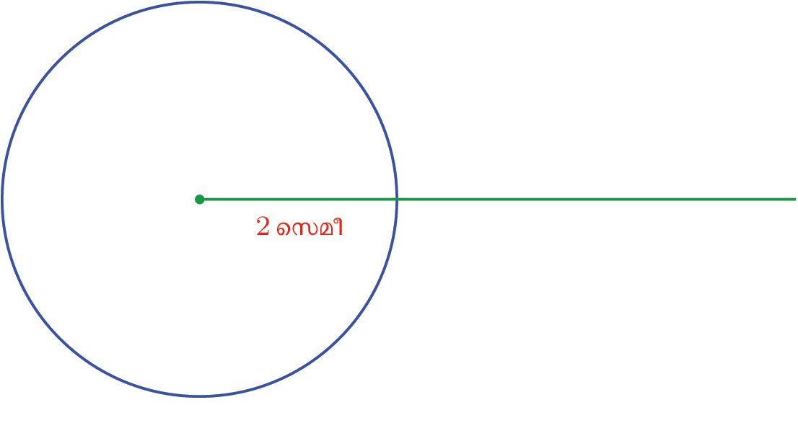<figcaption>Figure fig_ch08_p010_04 (Page 10)</figcaption></figure>
  <figure class="diagram-card" id="fig_ch08_p010_05"><figcaption>Figure fig_ch08_p010_05 (Page 10)</figcaption></figure>
  <div class="page-content">
    <p>Mathematics</p>
    <p>X</p>
    <p>We state this as a general principle:
The tangent at a point on a circle is perpendicular to the
diameter through that point.</p>
    <p>Let’s look at some problems based on this.
In the picture below, the top line is a tangent to the circle:</p>
    <p>2c</p>
    <p>m</p>
    <p>To draw a tangent to a circle in
GeoGebra, choose Tangents. Click
on the circle and a point on the circle.
What if we click on a point outside
the circle?
Draw the tangent at a point on a
circle and enable Trace On for it and
Animation for the point. What do we
get?</p>
    <p>Can you draw this picture in your notebook?
First draw a circle of radius 2 centimetres and a horizontal line through its
centre.
What we need next is a line
making an angle of 25o with this
line. If we draw a line slanted at
25o from an arbitrary point on this
line, it may not be a tangent to the
circle.</p>
    <p>2 cm</p>
    <p>162</p>
  </div>
</section><section class="page-section" id="page-11">
  <div class="page-header"><span class="page-number">Page 11</span></div>
  <figure class="diagram-card" id="fig_ch08_p011_01"><figcaption>Figure fig_ch08_p011_01 (Page 11)</figcaption></figure>
  <figure class="diagram-card" id="fig_ch08_p011_02"><figcaption>Figure fig_ch08_p011_02 (Page 11)</figcaption></figure>
  <figure class="diagram-card" id="fig_ch08_p011_03"><figcaption>Figure fig_ch08_p011_03 (Page 11)</figcaption></figure>
  <figure class="diagram-card" id="fig_ch08_p011_04"><figcaption>Figure fig_ch08_p011_04 (Page 11)</figcaption></figure>
  <figure class="diagram-card" id="fig_ch08_p011_05">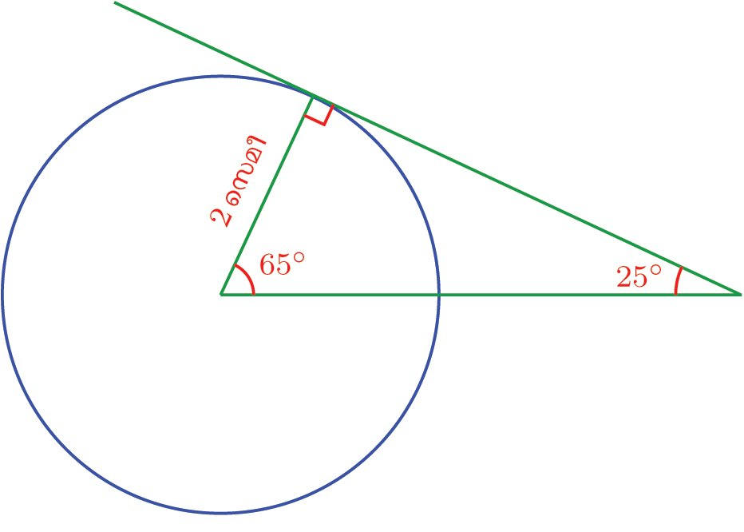<figcaption>Figure fig_ch08_p011_05 (Page 11)</figcaption></figure>
  <figure class="diagram-card" id="fig_ch08_p011_06">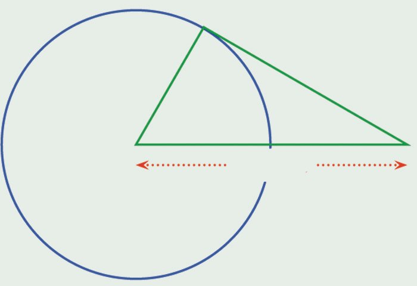<figcaption>Figure fig_ch08_p011_06 (Page 11)</figcaption></figure>
  <figure class="diagram-card" id="fig_ch08_p011_07">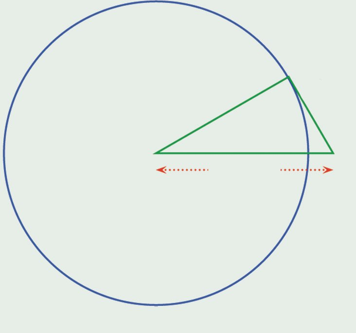<figcaption>Figure fig_ch08_p011_07 (Page 11)</figcaption></figure>
  <figure class="diagram-card" id="fig_ch08_p011_08">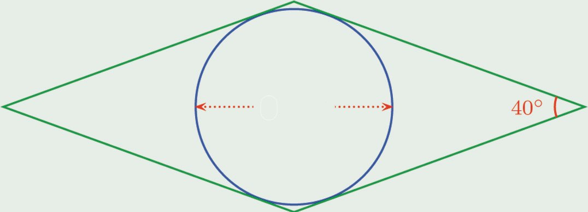<figcaption>Figure fig_ch08_p011_08 (Page 11)</figcaption></figure>
  <div class="page-content">
    <p>Tangents</p>
    <p>So, let’s think in reverse, at what point on the circle should we draw the
tangent? It should meet the first line at a 25o slant.
Look at the first picture again; the top angle of the triangle is 90o; and another
angle is 25o.
So, the third angle is 65o.</p>
    <p>2c</p>
    <p>m</p>
    <p>Can’t you complete the picture now?</p>
    <p>In each of the two pictures below, a triangle is formed by a tangent to
a circle, the radius through the point of contact and a line through the
centre:</p>
    <p>2</p>
    <p>cm</p>
    <p>(1)</p>
    <p>2.5</p>
    <p>cm</p>
    <p>5 cm</p>
    <p>4 cm</p>
    <p>Draw these in your note book.
(2)</p>
    <p>In the picture, all sides of
a rhombus are tangents to
a circle.</p>
    <p>4 cm</p>
    <p>Draw this picture in your
notebook.</p>
    <p>163</p>
  </div>
</section><section class="page-section" id="page-12">
  <div class="page-header"><span class="page-number">Page 12</span></div>
  <figure class="diagram-card" id="fig_ch08_p012_01"><figcaption>Figure fig_ch08_p012_01 (Page 12)</figcaption></figure>
  <figure class="diagram-card" id="fig_ch08_p012_02"><figcaption>Figure fig_ch08_p012_02 (Page 12)</figcaption></figure>
  <figure class="diagram-card" id="fig_ch08_p012_03"><figcaption>Figure fig_ch08_p012_03 (Page 12)</figcaption></figure>
  <figure class="diagram-card" id="fig_ch08_p012_04">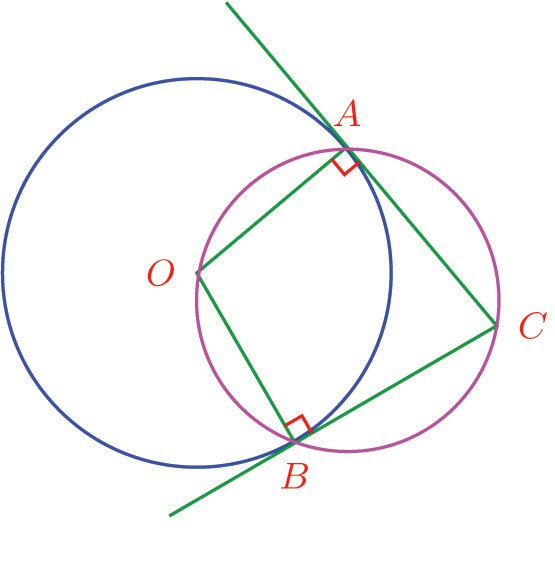<figcaption>Figure fig_ch08_p012_04 (Page 12)</figcaption></figure>
  <figure class="diagram-card" id="fig_ch08_p012_05"><figcaption>Figure fig_ch08_p012_05 (Page 12)</figcaption></figure>
  <figure class="diagram-card" id="fig_ch08_p012_06"><figcaption>Figure fig_ch08_p012_06 (Page 12)</figcaption></figure>
  <div class="page-content">
    <p>Mathematics</p>
    <p>X</p>
    <p>(3)</p>
    <p>Prove that the tangents drawn to a circle at the two ends of a diameter
are parallel.</p>
    <p>(4)</p>
    <p>What sort of a quadrilateral is formed by the tangents at the ends of
two perpendicular diameters of a circle?
Tangents and angles
See this picture:
The tangents at the points A, B on a circle
centred at O meet at C.
In the quadrilateral OACB, the angles at the
opposite corners A, B are right; so their sum
is 180o. Thus the quadrilateral is cyclic.</p>
    <p>The name
The name tangent is derived from the
Latin word tangere, meaning ‘to touch’.
The full name of the tan measure is also
tangent. What is its connection with a
line touching a circle?
T</p>
    <p>O</p>
    <p>x</p>
    <p>That is,
The quadrilateral with vertices at the centre
of a circle, two points on it and the point where
the tangents at these points meet, is cyclic.</p>
    <p>In such a quadrilateral the sum of the other two angles is
also 180o.</p>
    <p>P</p>
    <p>If we take the radius of the circle as
the unit of length, then the length of
the tangent PT is tan x, right?</p>
    <p>164</p>
  </div>
</section><section class="page-section" id="page-13">
  <div class="page-header"><span class="page-number">Page 13</span></div>
  <figure class="diagram-card" id="fig_ch08_p013_01"><figcaption>Figure fig_ch08_p013_01 (Page 13)</figcaption></figure>
  <figure class="diagram-card" id="fig_ch08_p013_02">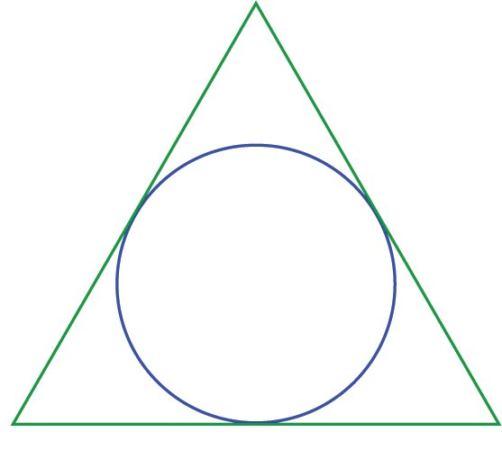<figcaption>Figure fig_ch08_p013_02 (Page 13)</figcaption></figure>
  <figure class="diagram-card" id="fig_ch08_p013_03"><figcaption>Figure fig_ch08_p013_03 (Page 13)</figcaption></figure>
  <figure class="diagram-card" id="fig_ch08_p013_04">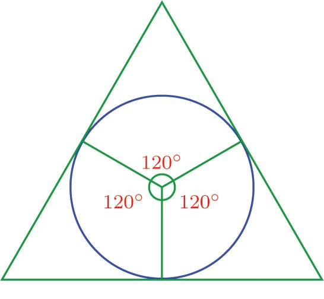<figcaption>Figure fig_ch08_p013_04 (Page 13)</figcaption></figure>
  <figure class="diagram-card" id="fig_ch08_p013_05"><figcaption>Figure fig_ch08_p013_05 (Page 13)</figcaption></figure>
  <figure class="diagram-card" id="fig_ch08_p013_06"><figcaption>Figure fig_ch08_p013_06 (Page 13)</figcaption></figure>
  <figure class="diagram-card" id="fig_ch08_p013_07"><figcaption>Figure fig_ch08_p013_07 (Page 13)</figcaption></figure>
  <figure class="diagram-card" id="fig_ch08_p013_08"><figcaption>Figure fig_ch08_p013_08 (Page 13)</figcaption></figure>
  <div class="page-content">
    <p></p>
    <p>
            
         </p>
    <p> </p>
    <p> </p>
    <p>       
     </p>
    <p>
The picture below shows a star made
by six tangents to a circle.</p>
    <p>    
  
</p>
    <p>NT-889-2-MATHS-10-E-VOL.2</p>
    <p>  
    </p>
    <p>How about 12 tangents?</p>
    <p>The picture below shows 90 tangents
drawn using a computer:</p>
    <p> 
   
    
 ­</p>
  </div>
</section><section class="page-section" id="page-14">
  <div class="page-header"><span class="page-number">Page 14</span></div>
  <figure class="diagram-card" id="fig_ch08_p014_01"><figcaption>Figure fig_ch08_p014_01 (Page 14)</figcaption></figure>
  <figure class="diagram-card" id="fig_ch08_p014_02"><figcaption>Figure fig_ch08_p014_02 (Page 14)</figcaption></figure>
  <figure class="diagram-card" id="fig_ch08_p014_03"><figcaption>Figure fig_ch08_p014_03 (Page 14)</figcaption></figure>
  <figure class="diagram-card" id="fig_ch08_p014_04"><figcaption>Figure fig_ch08_p014_04 (Page 14)</figcaption></figure>
  <figure class="diagram-card" id="fig_ch08_p014_05"><figcaption>Figure fig_ch08_p014_05 (Page 14)</figcaption></figure>
  <figure class="diagram-card" id="fig_ch08_p014_06">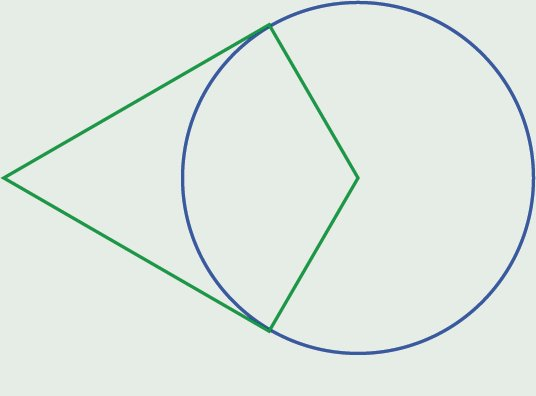<figcaption>Figure fig_ch08_p014_06 (Page 14)</figcaption></figure>
  <figure class="diagram-card" id="fig_ch08_p014_07"><figcaption>Figure fig_ch08_p014_07 (Page 14)</figcaption></figure>
  <figure class="diagram-card" id="fig_ch08_p014_08"><figcaption>Figure fig_ch08_p014_08 (Page 14)</figcaption></figure>
  <div class="page-content">
    <p>Mathematics</p>
    <p>X
Thus we need only draw three radii of the circle 120o apart and draw the
tangents at their ends to get our triangle.
Draw a circle of radius 3 centimetres and draw an equilateral triangle
like this.</p>
    <p>(1)</p>
    <p>Draw a circle of radius 2.5 centimetres. Draw a triangle of angles 40o,
60o, 80o with all its sides touching the circle.</p>
    <p>(2)</p>
    <p>In the picture, the small (blue) triangle is equilateral.
The sides of the large (red) triangle are tangents to
the circumcircle of the small triangle at its vertices.
i)</p>
    <p>Prove that the large triangle is also equilateral and its sides are double those of the
small triangle.</p>
    <p>ii)</p>
    <p>Draw this picture, with sides of the smaller
triangle 3 centimetres.</p>
    <p>Draw a circle and mark a point on it. (3)
Choose Angle with Given Size and
click on this point and the centre of
the circle; in the window opening up,
give the angle size as 120o. We get
another point on the circle. Click on
this new point and the centre of the
circle and give 120o as angle size again
to get a third point. Draw tangents to
the circle at these three points and
mark their points of intersection. Draw
a triangle joining these points. Now we
can hide the tangents. Enable Trace
On for the sides of the triangle and
set Animation On for the first point
chosen on the circle. What do you see?</p>
    <p>The picture shows the tangents at two points
on a circle and the radii through the points of contact.</p>
    <p>i)</p>
    <p>Prove that the tangents have the same length.</p>
    <p>ii)</p>
    <p>Prove that the line joining the centre and the
point where the tangents meet bisects the
angle between
the radii.</p>
    <p>166</p>
  </div>
</section><section class="page-section" id="page-15">
  <div class="page-header"><span class="page-number">Page 15</span></div>
  <figure class="diagram-card" id="fig_ch08_p015_01"><figcaption>Figure fig_ch08_p015_01 (Page 15)</figcaption></figure>
  <figure class="diagram-card" id="fig_ch08_p015_02"><figcaption>Figure fig_ch08_p015_02 (Page 15)</figcaption></figure>
  <figure class="diagram-card" id="fig_ch08_p015_03">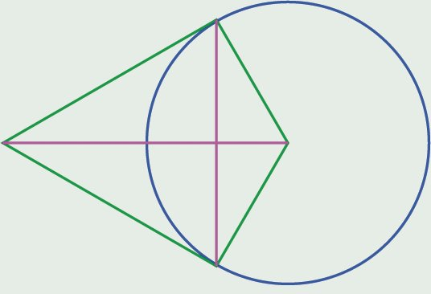<figcaption>Figure fig_ch08_p015_03 (Page 15)</figcaption></figure>
  <figure class="diagram-card" id="fig_ch08_p015_04"><figcaption>Figure fig_ch08_p015_04 (Page 15)</figcaption></figure>
  <figure class="diagram-card" id="fig_ch08_p015_05">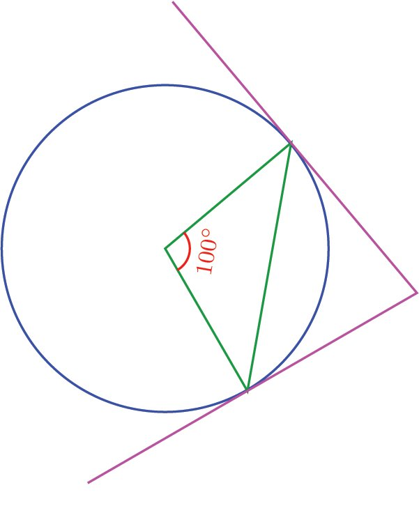<figcaption>Figure fig_ch08_p015_05 (Page 15)</figcaption></figure>
  <figure class="diagram-card" id="fig_ch08_p015_06"><figcaption>Figure fig_ch08_p015_06 (Page 15)</figcaption></figure>
  <figure class="diagram-card" id="fig_ch08_p015_07"><figcaption>Figure fig_ch08_p015_07 (Page 15)</figcaption></figure>
  <div class="page-content">
    <p>Tangents</p>
    <p>iii)</p>
    <p>(4)</p>
    <p>Prove that this line is the perpendicular
bisector of the chord joining the points
of contact.</p>
    <p>Prove that the quadrilateral with sides as the
tangents at the ends of a pair of perpendicular
chords of a circle is cyclic. (See the Problem (7) in
the section, Chord, angle and arc of the chapter
Circles )
What sort of a quadrilateral do we get if one chord
is a diameter? And if both chords are diameters?</p>
    <p>Chord and tangent
The picture shows the tangents at the two ends of a chord of a circle:</p>
    <p>We know that angle between the tangents is
80o. What about the angles between the tangents and the chord?</p>
    <p>167</p>
  </div>
</section><section class="page-section" id="page-16">
  <div class="page-header"><span class="page-number">Page 16</span></div>
  <figure class="diagram-card" id="fig_ch08_p016_01"><figcaption>Figure fig_ch08_p016_01 (Page 16)</figcaption></figure>
  <figure class="diagram-card" id="fig_ch08_p016_02"><figcaption>Figure fig_ch08_p016_02 (Page 16)</figcaption></figure>
  <figure class="diagram-card" id="fig_ch08_p016_03"><figcaption>Figure fig_ch08_p016_03 (Page 16)</figcaption></figure>
  <figure class="diagram-card" id="fig_ch08_p016_04"><figcaption>Figure fig_ch08_p016_04 (Page 16)</figcaption></figure>
  <div class="page-content">
    <p>Mathematics</p>
    <p>X</p>
    <p>The two sides of the green triangle in the
picture are equal and so are the angles
opposite them. Since the sum of these angles is
180o − 100o = 80o, each measures 40o.</p>
    <p>The angle between the radius and the tangent is 90o. So the angle between the
chord and the tangent is 90o − 40o = 50o.</p>
    <p>Area problem
What is the area of the green ring?
8 cm</p>
    <p>This is half the central angle of the chord, isn’t it?
Is it true for any chord? To check this, let’s take the central
angle as xo .</p>
    <p>168</p>
  </div>
</section><section class="page-section" id="page-17">
  <div class="page-header"><span class="page-number">Page 17</span></div>
  <figure class="diagram-card" id="fig_ch08_p017_01"><figcaption>Figure fig_ch08_p017_01 (Page 17)</figcaption></figure>
  <figure class="diagram-card" id="fig_ch08_p017_02"><figcaption>Figure fig_ch08_p017_02 (Page 17)</figcaption></figure>
  <figure class="diagram-card" id="fig_ch08_p017_03">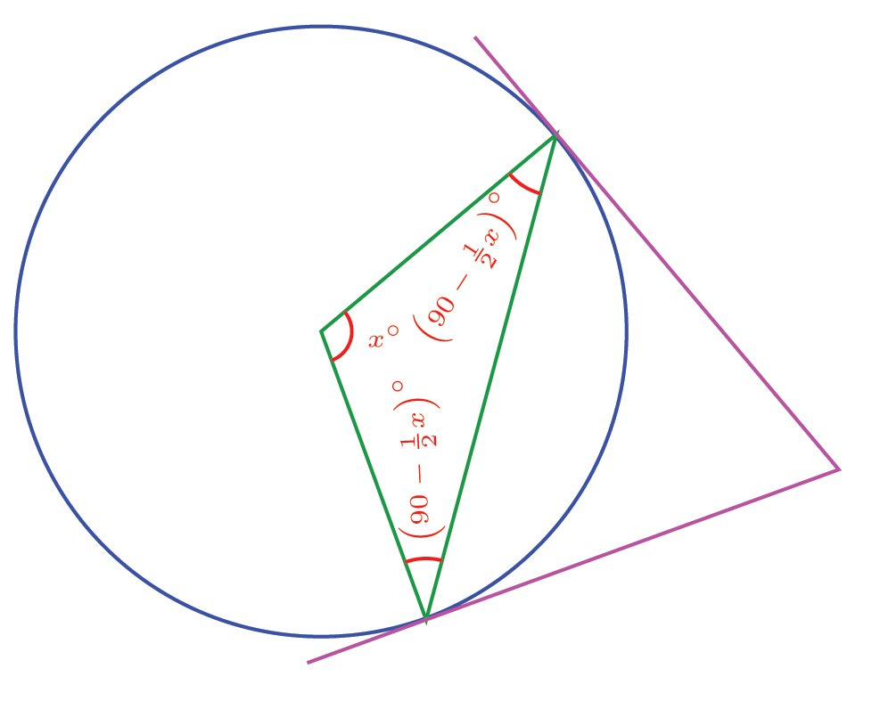<figcaption>Figure fig_ch08_p017_03 (Page 17)</figcaption></figure>
  <figure class="diagram-card" id="fig_ch08_p017_04"><figcaption>Figure fig_ch08_p017_04 (Page 17)</figcaption></figure>
  <figure class="diagram-card" id="fig_ch08_p017_05"><figcaption>Figure fig_ch08_p017_05 (Page 17)</figcaption></figure>
  <div class="page-content">
    <p>Tangents</p>
    <p>So the other two angles of the green triangle are
1
1 ⎞
⎛
(180 − x)o = ⎜⎝ 90 − 2 x⎟⎠
2</p>
    <p>o</p>
    <p>Since the angle between the tangent and
the radius is 90o, we can see that the angle
1</p>
    <p>between the tangent and chord is 2 xo.</p>
    <p>In GeoGebra, draw a circle and a
chord. Draw the tangents at the
ends of this chord. Mark the
central angle of the chord and the
angles between the chord and the
tangents. What is the relation
between these angles ? Draw
several chords and see.</p>
    <p>In a circle, the angle between a chord and tangent at either end
is half the central angle of the chord.</p>
    <p>The angle made by the chord on the larger part of the circle is also half the
central angle, isn’t it? (The chapter, Circles)</p>
    <p>169</p>
  </div>
</section><section class="page-section" id="page-18">
  <div class="page-header"><span class="page-number">Page 18</span></div>
  <figure class="diagram-card" id="fig_ch08_p018_01"><figcaption>Figure fig_ch08_p018_01 (Page 18)</figcaption></figure>
  <figure class="diagram-card" id="fig_ch08_p018_02"><figcaption>Figure fig_ch08_p018_02 (Page 18)</figcaption></figure>
  <figure class="diagram-card" id="fig_ch08_p018_03"><figcaption>Figure fig_ch08_p018_03 (Page 18)</figcaption></figure>
  <figure class="diagram-card" id="fig_ch08_p018_04">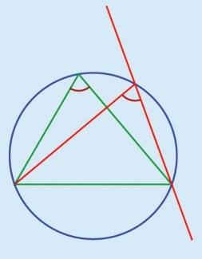<figcaption>Figure fig_ch08_p018_04 (Page 18)</figcaption></figure>
  <figure class="diagram-card" id="fig_ch08_p018_05"><figcaption>Figure fig_ch08_p018_05 (Page 18)</figcaption></figure>
  <figure class="diagram-card" id="fig_ch08_p018_06">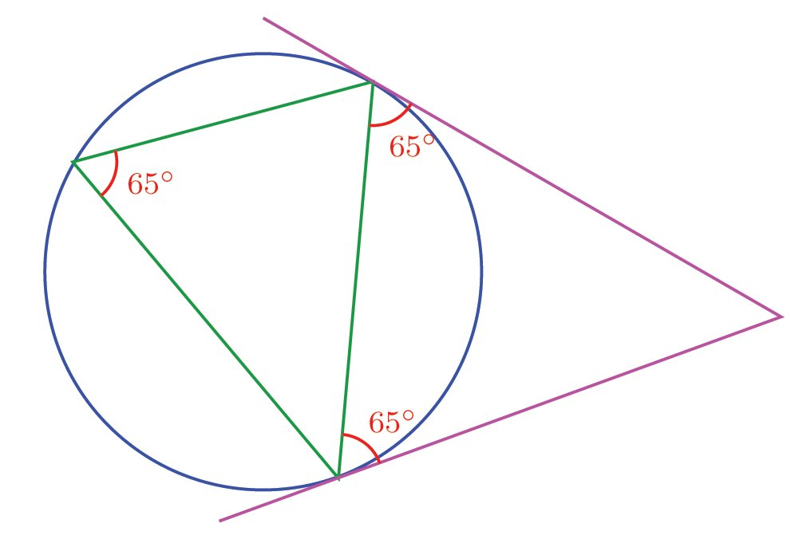<figcaption>Figure fig_ch08_p018_06 (Page 18)</figcaption></figure>
  <figure class="diagram-card" id="fig_ch08_p018_07">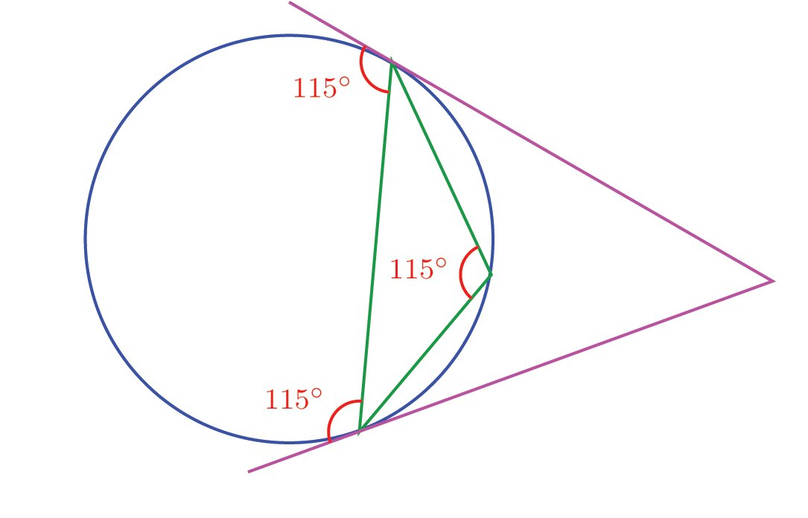<figcaption>Figure fig_ch08_p018_07 (Page 18)</figcaption></figure>
  <div class="page-content">
    <p>Mathematics</p>
    <p>X
So in this picture, what is the angle which the tangents make with the chord?</p>
    <p>Unchanging angle
We have seen that the angles on
the same part of a circle are equal.
P</p>
    <p>B</p>
    <p>A</p>
    <p>The angles on the right are 65o.</p>
    <p>Let’s extend PB a bit.
X</p>
    <p>P</p>
    <p>B</p>
    <p>A</p>
    <p>Y</p>
    <p>Now suppose P moves along the
circle to reach B.</p>
    <p>The angles which the tangents make on the left of the chord
are 180o − 65o = 115o. This is the angle which the chord
makes on the smaller part of the circle, isn’t it?</p>
    <p>X</p>
    <p>B</p>
    <p>A</p>
    <p>Y</p>
    <p>The line XY becomes the tangent
at B. And the angle does not
change.</p>
    <p>So the relation between the angles which the chord makes
with the tangents at its ends and the angles which it makes on
the circle can be shown like this:</p>
    <p>170</p>
  </div>
</section><section class="page-section" id="page-19">
  <div class="page-header"><span class="page-number">Page 19</span></div>
  <figure class="diagram-card" id="fig_ch08_p019_01"><figcaption>Figure fig_ch08_p019_01 (Page 19)</figcaption></figure>
  <figure class="diagram-card" id="fig_ch08_p019_02">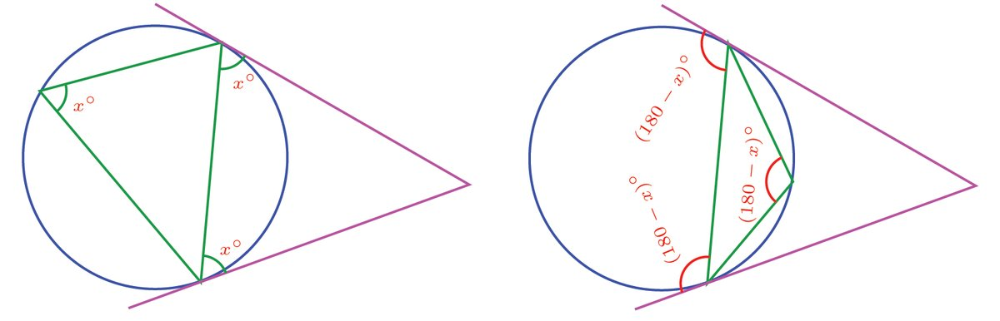<figcaption>Figure fig_ch08_p019_02 (Page 19)</figcaption></figure>
  <figure class="diagram-card" id="fig_ch08_p019_03">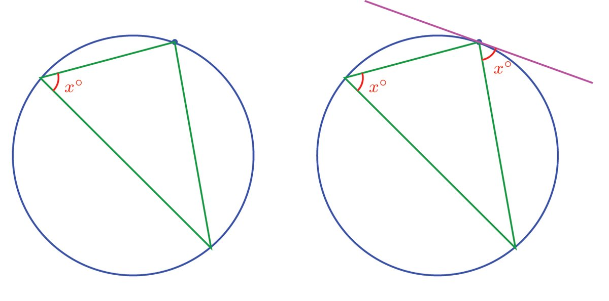<figcaption>Figure fig_ch08_p019_03 (Page 19)</figcaption></figure>
  <figure class="diagram-card" id="fig_ch08_p019_04">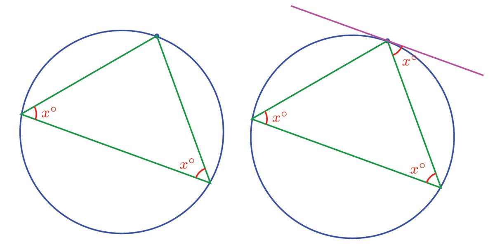<figcaption>Figure fig_ch08_p019_04 (Page 19)</figcaption></figure>
  <figure class="diagram-card" id="fig_ch08_p019_05"><figcaption>Figure fig_ch08_p019_05 (Page 19)</figcaption></figure>
  <figure class="diagram-card" id="fig_ch08_p019_06"><figcaption>Figure fig_ch08_p019_06 (Page 19)</figcaption></figure>
  <div class="page-content">
    <p>Tangents</p>
    <p>And we can write it like this:
In a circle, the angle which a chord makes with the tangent at
one end on any side is equal to the angle which it makes on the
part of the circle on the other side.</p>
    <p>We draw a tangent to a circle at a point by drawing the perpendicular to the
diameter through this point, right? The above idea can be used to draw tangents,
even if the centre is not known.</p>
    <p>We need only draw a chord through this point and draw the angle which it
makes on one part of the circle on the opposite side of the chord:
Draw tangents to a circle at points
A, B and mark the angles between
the chord and tangents. Mark a point
C on the circle and draw ∠ACB.
What is the relation between these
angles? Change the position of
A, B, C and see.</p>
    <p>If the triangle drawn is isosceles, then we need draw only the line through the
point, parallel to the bottom side.
So, to draw the tangent to a circle at a specified point, we first draw an arc of
the circle centred at this point and join the points where it cuts the first circle:</p>
    <p>171</p>
  </div>
</section><section class="page-section" id="page-20">
  <div class="page-header"><span class="page-number">Page 20</span></div>
  <figure class="diagram-card" id="fig_ch08_p020_01"><figcaption>Figure fig_ch08_p020_01 (Page 20)</figcaption></figure>
  <figure class="diagram-card" id="fig_ch08_p020_02"><figcaption>Figure fig_ch08_p020_02 (Page 20)</figcaption></figure>
  <figure class="diagram-card" id="fig_ch08_p020_03">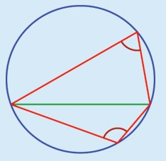<figcaption>Figure fig_ch08_p020_03 (Page 20)</figcaption></figure>
  <figure class="diagram-card" id="fig_ch08_p020_04">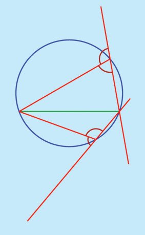<figcaption>Figure fig_ch08_p020_04 (Page 20)</figcaption></figure>
  <figure class="diagram-card" id="fig_ch08_p020_05">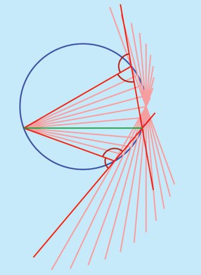<figcaption>Figure fig_ch08_p020_05 (Page 20)</figcaption></figure>
  <figure class="diagram-card" id="fig_ch08_p020_06">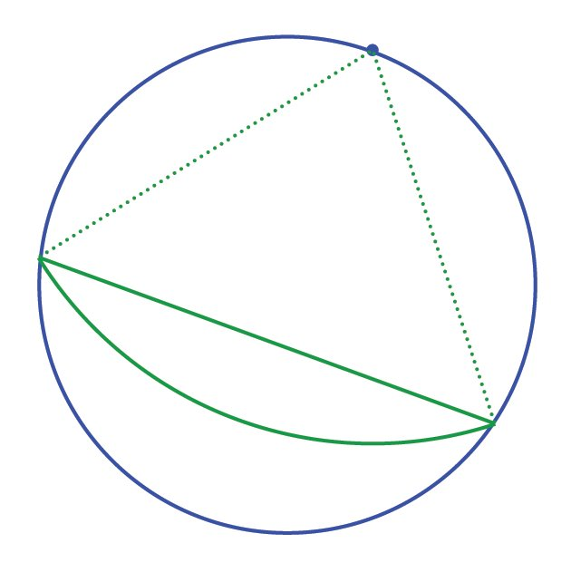<figcaption>Figure fig_ch08_p020_06 (Page 20)</figcaption></figure>
  <figure class="diagram-card" id="fig_ch08_p020_07">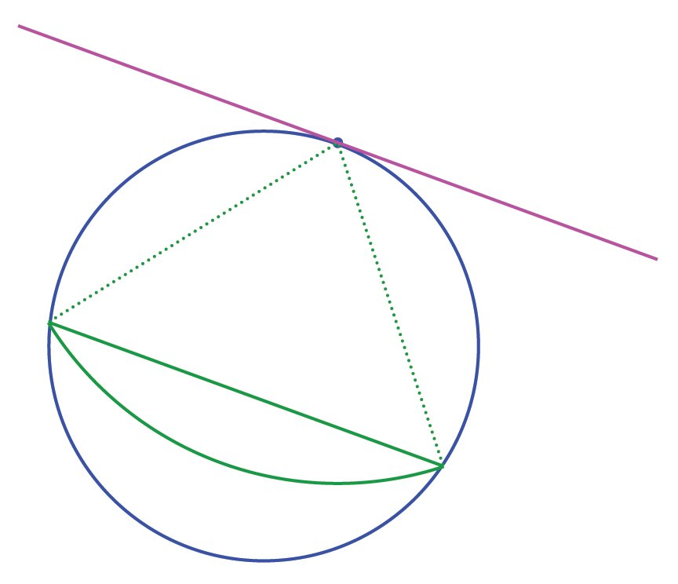<figcaption>Figure fig_ch08_p020_07 (Page 20)</figcaption></figure>
  <figure class="diagram-card" id="fig_ch08_p020_08">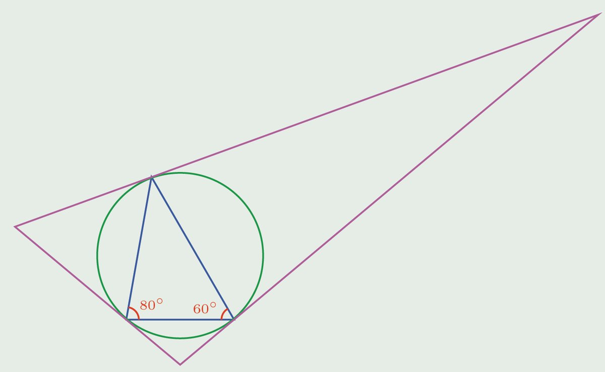<figcaption>Figure fig_ch08_p020_08 (Page 20)</figcaption></figure>
  <figure class="diagram-card" id="fig_ch08_p020_09"><figcaption>Figure fig_ch08_p020_09 (Page 20)</figcaption></figure>
  <figure class="diagram-card" id="fig_ch08_p020_10"><figcaption>Figure fig_ch08_p020_10 (Page 20)</figcaption></figure>
  <div class="page-content">
    <p>Mathematics</p>
    <p>X</p>
    <p>Flip – flop
Angles on the two parts of a circle
are supplementary:
P
x°
A</p>
    <p>B</p>
    <p>(180 − x)°
Q</p>
    <p>Let’s extend the lines as before.</p>
    <p>Now we need only draw a line parallel to this line through the
point at which we want the tangent:</p>
    <p>X</p>
    <p>P</p>
    <p>(180 − x)°
x°
A</p>
    <p>U
B</p>
    <p>(180 − x)°
x°</p>
    <p>Q
Y</p>
    <p>V</p>
    <p>What happens as P moves towards
Q along the circle? X</p>
    <p>x°</p>
    <p>U</p>
    <p>(180 − x)°</p>
    <p>B</p>
    <p>x°</p>
    <p>In the picture, the sides of the large
triangle are tangents to the circumcircle
of the small triangle, through its vertices.</p>
    <p>P</p>
    <p>(180 − x)°</p>
    <p>A</p>
    <p>(1)</p>
    <p>Q
Y</p>
    <p>V</p>
    <p>Throughout the motion, xo is below
AP and (180 − x)° is above AP, isn’t
it?</p>
    <p>Calculate the angles of the large triangle.</p>
    <p>172</p>
  </div>
</section><section class="page-section" id="page-21">
  <div class="page-header"><span class="page-number">Page 21</span></div>
  <figure class="diagram-card" id="fig_ch08_p021_01"><figcaption>Figure fig_ch08_p021_01 (Page 21)</figcaption></figure>
  <figure class="diagram-card" id="fig_ch08_p021_02"><figcaption>Figure fig_ch08_p021_02 (Page 21)</figcaption></figure>
  <figure class="diagram-card" id="fig_ch08_p021_03">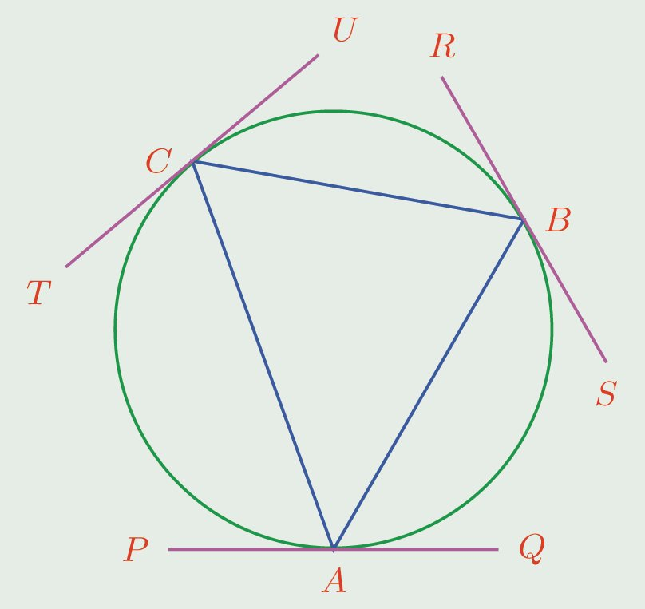<figcaption>Figure fig_ch08_p021_03 (Page 21)</figcaption></figure>
  <figure class="diagram-card" id="fig_ch08_p021_04"><figcaption>Figure fig_ch08_p021_04 (Page 21)</figcaption></figure>
  <figure class="diagram-card" id="fig_ch08_p021_05">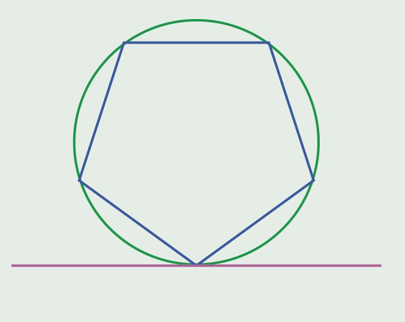<figcaption>Figure fig_ch08_p021_05 (Page 21)</figcaption></figure>
  <figure class="diagram-card" id="fig_ch08_p021_06">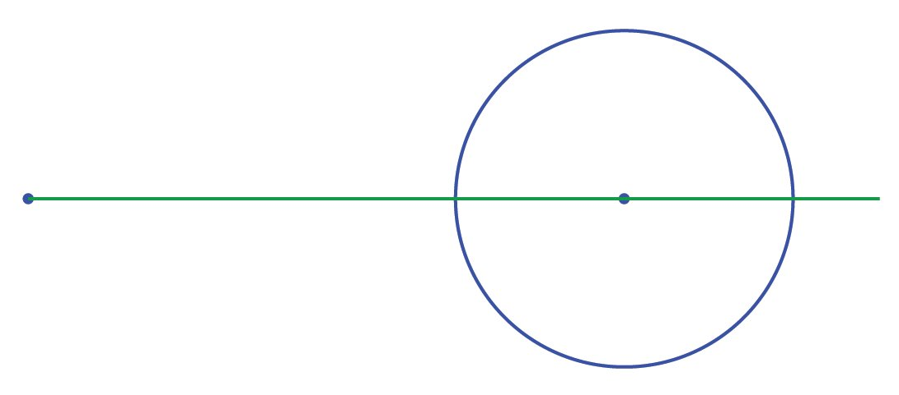<figcaption>Figure fig_ch08_p021_06 (Page 21)</figcaption></figure>
  <div class="page-content">
    <p>Tangents</p>
    <p>(2)</p>
    <p>In the picture, the sides of the large
triangle are tangents of the circumcircle of the smaller triangle, through
its vertices.
Calculate the angles of the smaller
triangle.</p>
    <p>(3)</p>
    <p>In the picture, PQ, RS, TU are tangents
to the circumcircle of ΔABC.
Sort out the equal angles in the
picture.</p>
    <p>(4)</p>
    <p>In the picture, the tangent to the circumcircle
of a regular pentagon through a vertex is
shown.
Calculate the angle which the tangent makes
with the two sides of the pentagon through
the point of contact.</p>
    <p>A tangent from outside
See this picture:
A point outside a circle is joined to the
centre and extended. It cuts the circle at two points;
and these points are the ends of a diameter.
Suppose we join the same point outside the circle
to a point a little above or below the centre?</p>
    <p>173</p>
  </div>
</section><section class="page-section" id="page-22">
  <div class="page-header"><span class="page-number">Page 22</span></div>
  <figure class="diagram-card" id="fig_ch08_p022_01"><figcaption>Figure fig_ch08_p022_01 (Page 22)</figcaption></figure>
  <figure class="diagram-card" id="fig_ch08_p022_02">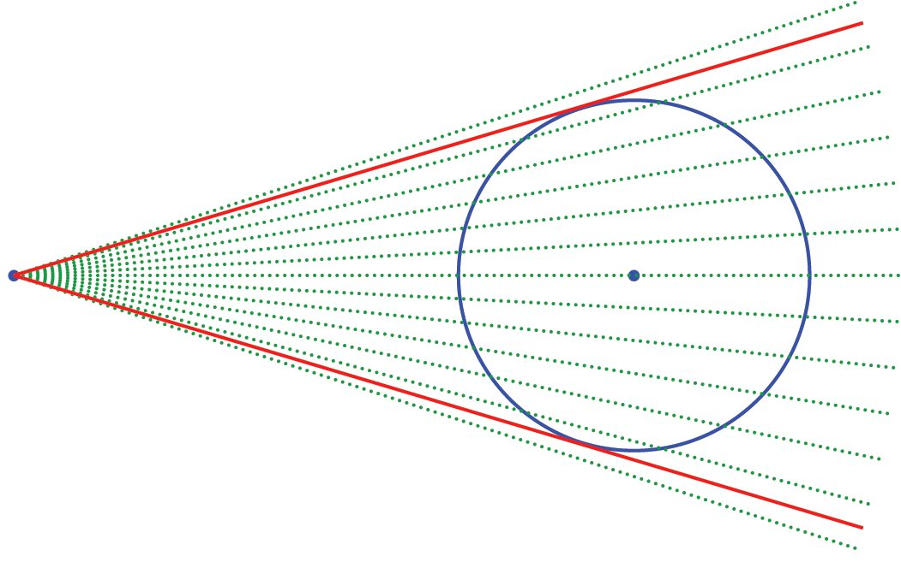<figcaption>Figure fig_ch08_p022_02 (Page 22)</figcaption></figure>
  <figure class="diagram-card" id="fig_ch08_p022_03">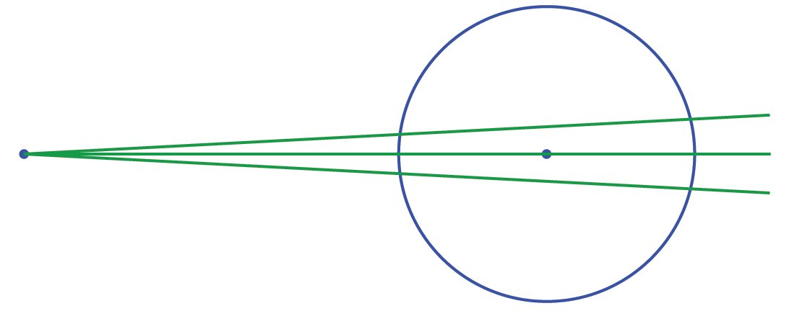<figcaption>Figure fig_ch08_p022_03 (Page 22)</figcaption></figure>
  <figure class="diagram-card" id="fig_ch08_p022_04">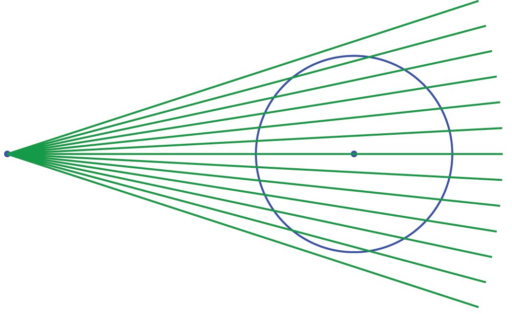<figcaption>Figure fig_ch08_p022_04 (Page 22)</figcaption></figure>
  <figure class="diagram-card" id="fig_ch08_p022_05"><figcaption>Figure fig_ch08_p022_05 (Page 22)</figcaption></figure>
  <div class="page-content">
    <p>Mathematics</p>
    <p>X</p>
    <p>The points where the line cuts the circle get a little closer. Let’s
continue this:</p>
    <p>The lines which cut the circle at closer and closer points leave the circle entirely
after a stage.
But at some stage before this, two of these lines above and below just touch
the circle, don’t they?</p>
    <p>From a point outside a circle, two tangents can be drawn.</p>
    <p>But we haven’t discussed how we can actually draw such a pair of tangents.
See this picture:</p>
    <p>5 cm</p>
    <p>174</p>
    <p>2 cm</p>
  </div>
</section><section class="page-section" id="page-23">
  <div class="page-header"><span class="page-number">Page 23</span></div>
  <figure class="diagram-card" id="fig_ch08_p023_01"><figcaption>Figure fig_ch08_p023_01 (Page 23)</figcaption></figure>
  <figure class="diagram-card" id="fig_ch08_p023_02">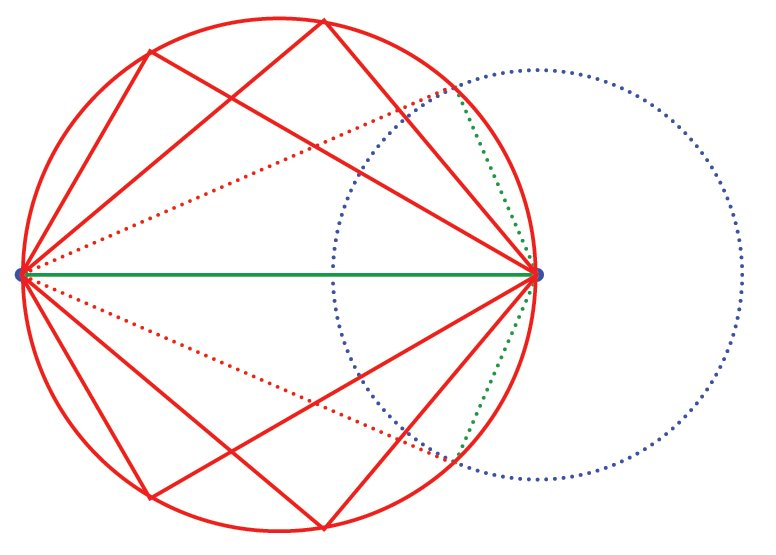<figcaption>Figure fig_ch08_p023_02 (Page 23)</figcaption></figure>
  <figure class="diagram-card" id="fig_ch08_p023_03"><figcaption>Figure fig_ch08_p023_03 (Page 23)</figcaption></figure>
  <figure class="diagram-card" id="fig_ch08_p023_04"><figcaption>Figure fig_ch08_p023_04 (Page 23)</figcaption></figure>
  <figure class="diagram-card" id="fig_ch08_p023_05"><figcaption>Figure fig_ch08_p023_05 (Page 23)</figcaption></figure>
  <div class="page-content">
    <p>Tangents</p>
    <p>A point is marked 5 centimetres away from the centre of a circle of radius 2
centimetres.
How do we draw the pair of tangents to the circle from this point?
Perhaps it would be clear if we imagine how the picture would be after they
are drawn:</p>
    <p>We need two pairs of mutually perpendicular lines from the centre of the
circle and the point outside.
We have seen in the lesson Circles, that all such pairs of mutually perpendicular
lines meet on the circle with the line joining these points as diameter:</p>
    <p>In those pairs we want, one line should be a radius of our original
circle; that is, the lines should meet on this circle. For that, we
need only draw through the point of intersection of the old and
new circles.
Now can’t we actually draw the tangents? First draw the circle
on the line joining the point outside with the centre as diameter:</p>
    <p>175</p>
    <p>Draw a circle centred at a point
O in GeoGebra and mark points
A, B on it. Draw the tangents at
these points and mark their point
of intersection as C. Draw the
quadrilateral OACB. Is it cyclic?
We can check by drawing the
circle through O, A, B using
Circle Through Three Points .
Move A, B and see what
happens to C when they get
closer and farther apart. What
happens when they are the ends
of a diameter?</p>
  </div>
</section><section class="page-section" id="page-24">
  <div class="page-header"><span class="page-number">Page 24</span></div>
  <figure class="diagram-card" id="fig_ch08_p024_01"><figcaption>Figure fig_ch08_p024_01 (Page 24)</figcaption></figure>
  <figure class="diagram-card" id="fig_ch08_p024_02">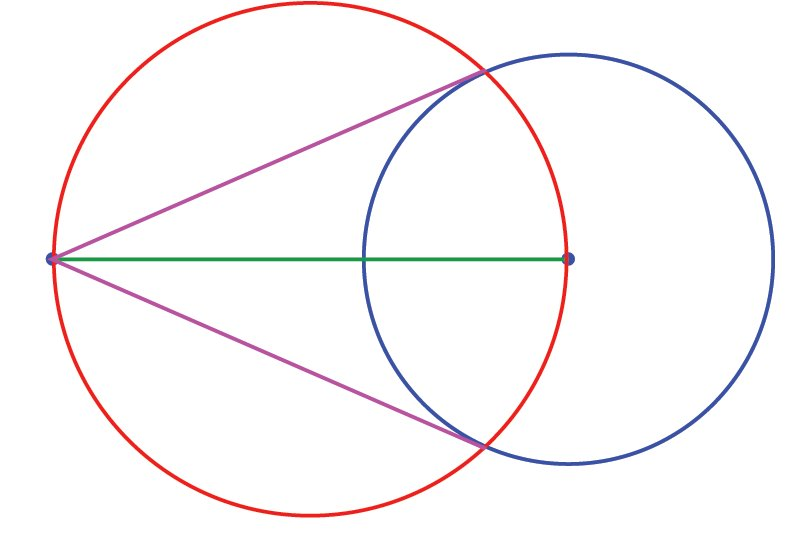<figcaption>Figure fig_ch08_p024_02 (Page 24)</figcaption></figure>
  <figure class="diagram-card" id="fig_ch08_p024_03"><figcaption>Figure fig_ch08_p024_03 (Page 24)</figcaption></figure>
  <figure class="diagram-card" id="fig_ch08_p024_04"><figcaption>Figure fig_ch08_p024_04 (Page 24)</figcaption></figure>
  <div class="page-content">
    <p>Mathematics</p>
    <p>X
Joining the points of intersection of these circles to the point outside, we get
the tangents from it:</p>
    <p>In our problem, the radius of the original circle is 2 centimetres and the
distance from the centre to the point outside is 5 centimetres.
2c
m</p>
    <p>5 cm
2c
m</p>
    <p>So, we can calculate the lengths of the tangents using Pythagoras
Theorem:
52 − 22 =</p>
    <p>21 centimetres</p>
    <p>We have already seen that if tangents are drawn from two points on a circle,
then their lengths from the point of contact to the point of intersection are
equal. We can now state it like this:
The tangents to a circle from a point are of the same length.</p>
    <p>Let’s look at a problem based on this. The
picture shows the quadrilateral formed by
the tangents at four points on a circle.
Let’s join the centre to these points.</p>
    <p>176</p>
  </div>
</section><section class="page-section" id="page-25">
  <div class="page-header"><span class="page-number">Page 25</span></div>
  <figure class="diagram-card" id="fig_ch08_p025_01"><figcaption>Figure fig_ch08_p025_01 (Page 25)</figcaption></figure>
  <figure class="diagram-card" id="fig_ch08_p025_02">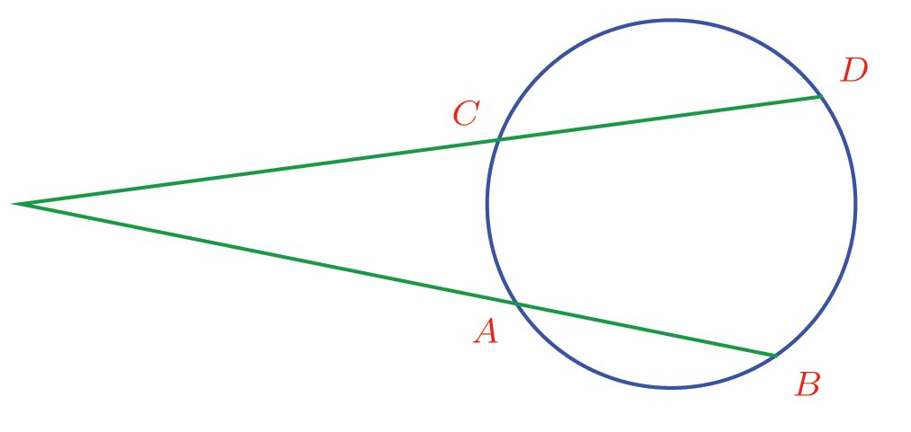<figcaption>Figure fig_ch08_p025_02 (Page 25)</figcaption></figure>
  <figure class="diagram-card" id="fig_ch08_p025_03"><figcaption>Figure fig_ch08_p025_03 (Page 25)</figcaption></figure>
  <figure class="diagram-card" id="fig_ch08_p025_04">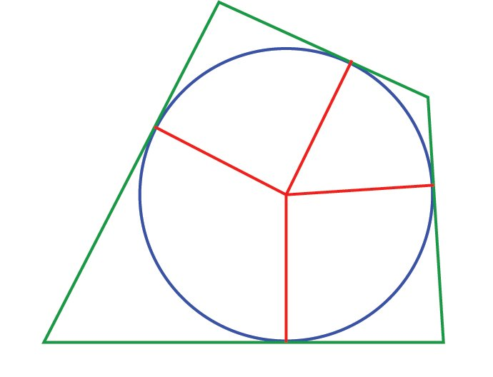<figcaption>Figure fig_ch08_p025_04 (Page 25)</figcaption></figure>
  <figure class="diagram-card" id="fig_ch08_p025_05"><figcaption>Figure fig_ch08_p025_05 (Page 25)</figcaption></figure>
  <div class="page-content">
    <p>Tangents</p>
    <p>Taking the lengths of the tangents from the corners as a, b, c, d,
we can mark these lengths as below:
d
d</p>
    <p>c
c</p>
    <p>a
b
a</p>
    <p>b</p>
    <p>So, the sum of the lengths of the bottom and top sides of the
quadrilateral is (a + b) + (c + d).
What about the sum of the left and right sides?
(a + d) + (b + c)</p>
    <p>Draw a circle in GeoGebra and
mark four points on it. Draw
tangents at these points and mark
their points of intersection. Draw
the quadrilateral with these as
vertices. Then we can hide the
tangents. Mark the lengths of the
sides of the quadrilateral and note
the relation between them, as we
change the positions of the points
on the circle.</p>
    <p>Both sums are a + b + c + d . Thus we have the following:
In a quadrilateral formed by the tangents at four points on a
circle, the sum of the opposite sides are equal.</p>
    <p>Recall the fact we have seen earlier: in a quadrilateral formed by joining four
points on a circle, the sum of the opposite angles are equal.
If the sum of the opposite sides of a quadrilateral are equal, can we
draw a circle with the four sides as tangents?
We have seen that among the lines drawn to a circle from a point, those which
touch the circle at a single point are equal. We have also seen in the lesson,
Circles, that for all lines cutting the circle at two points, the product of the
whole line and the part outside the circle are equal.
Remember this picture and its equation?</p>
    <p>P</p>
    <p>PA × PB = PC × PD</p>
    <p>Now suppose, we draw a line which touches a circle and another line
intersecting the circle.</p>
    <p>177</p>
  </div>
</section>
    </main>

    <footer>
      <div class="nav-bar"><a href="chapter_07_coordinates.html">← Chapter 7: Coordinates</a><a href="index.html">☰ Index</a><a href="chapter_09_solids.html">Chapter 9: Solids →</a></div>
      <p style="text-align: center; font-size: 0.85rem; color: var(--text-muted); margin-top: 2rem;">
        Kerala SCERT Class 10 Mathematics (English Medium) - Extracted Study Text
      </p>
    </footer>
  </div>
</body>
</html>
